1. Executive Overview: Translating Law into Automated Code
In modern cloud computing, the traditional divide between legal compliance and systems engineering represents an existential operational risk. Legal departments author static policy manuals, Data Protection Impact Assessments (DPIAs), and acceptable use memos. Meanwhile, engineering teams deploy microservices, provision cloud storage accounts, and integrate Generative AI assistants in rapid CI/CD cycles.
When a software engineer accidentally configures an Azure Blob container with anonymous read access, or an analyst pastes confidential vendor bank details into an ungrounded AI chat interface, static policies offer zero resistance. The breach occurs at the packet level; compliance must therefore be enforced at the cloud control plane.
To validate this architecture in a production-identical setting, I established Nexora Consulting—a simulated Indian B2B FinTech and Healthcare Advisory enterprise headquartered across dual technology hubs in Gurugram and Bengaluru.
Nexora Consulting operates across five specialized functional units: Finance & Treasury, Human Resources, Legal & Compliance, IT Security Operations, and Healthcare Advisory Services. On any given business day, Nexora's cloud infrastructure processes two high-risk categories of sensitive data:
- Indian Employee & Corporate Vendor Financial Records: Permanent Account Numbers (PAN), corporate bank account numbers, tax identification sheets, and invoice reconciliation registers stored across private Azure Data Lake storage.
- Healthcare Client & Patient Identifiers: Structured patient support coordination plans and unique clinical identification records governed by domestic healthcare privacy protocols and client confidentiality agreements.
2. Regulatory Framework & Threat Model
Designing enterprise cloud controls requires grounding every configuration in specific statutory requirements. For Nexora Consulting, three intersecting frameworks established our technical design criteria:
1. Digital Personal Data Protection Act, 2023 (India DPDP Act):
- Section 6 (Purpose Limitation): Mandates that personal data must only be processed for the specific lawful purpose consented to by the Data Principal. PII must be shielded from shadow AI ingestion and unapproved processing.
- Section 8(5) (Technical Safeguards): Imposes an affirmative legal duty on the Data Fiduciary to implement reasonable security safeguards to prevent personal data breaches under threat of statutory penalties up to ₹250 Crores.
- Section 11 (Right of Access & DSAR): Grants individuals the statutory right to obtain a summary of their personal data and identities of third parties with whom it was shared, requiring targeted search and strict third-party PII redaction.
2. Payment Card Industry Data Security Standard (PCI-DSS): Requirements 3 and 7 mandate that stored payment card information (primary account numbers, transaction hashes) must be cryptographically protected and strictly isolated to authorized personnel.
3. ISO/IEC 27001:2022 & ISO 27701: Controls A.9 (Access Control), A.9.2.3 (Management of Privileged Access), and A.12.4 (Logging and Monitoring) require Zero Standing Privileges, segregation of duties, and tamper-resistant audit trails.
3. Phase 1: Identity Governance & Zero Standing Privileges
Identity is the primary security perimeter of any Zero-Trust cloud deployment. Under DPDP Act Section 8(5) and ISO 27001 A.9, granting permanent administrative privileges to individual user accounts introduces severe insider-threat exposure. If an administrator's credentials are compromised, an attacker inherits standing access to all underlying repositories.
3.1 Workforce Directory Provisioning (26 Cloud Identities)
I began by provisioning 26 directory identities in Microsoft Entra ID. Each identity was assigned to a defined functional role within Nexora Consulting, completely segregating standard business analysts from dedicated privacy leadership and emergency recovery accounts.
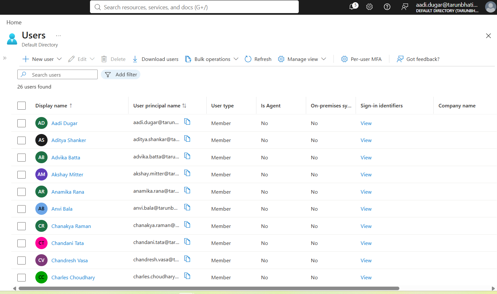
3.2 Departmental Security Group Architecture (12 Groups)
To prevent permission sprawl, individual user access assignments were strictly banned. I established 12 role-segmented Entra Security Groups (including SG-NEX-All-Employees, SG-NEX-Finance, SG-NEX-HR, SG-NEX-IT-Security, and SG-NEX-Legal-Compliance). All downstream cloud governance policies—from Azure Storage IAM to Purview sensitivity labels—target these groups exclusively.

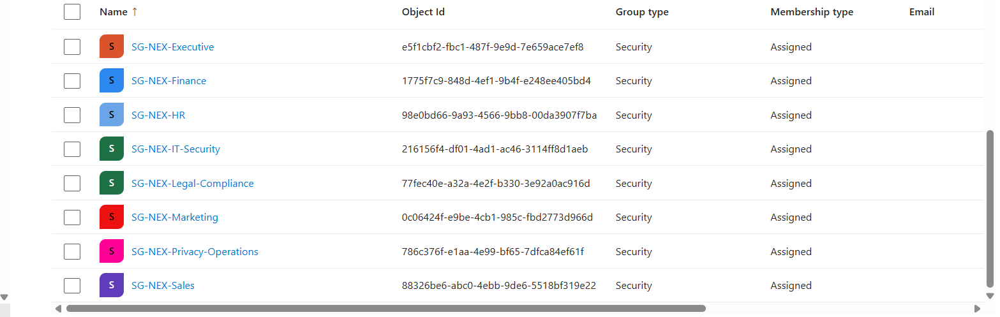
3.3 Just-In-Time Privilege Elevation (Entra PIM)
For Nexora's designated Data Protection Officer (DPO), standing administrative rights were completely revoked. Utilizing Microsoft Entra Privileged Identity Management (PIM), the DPO was provisioned with Eligible assignments for Azure Information Protection Administrator and Compliance Administrator. Under normal conditions, the DPO operates with zero administrative power. When compliance intervention is required, the DPO must activate the role via mandatory Multi-Factor Authentication (MFA), provide a documented business justification, and operate within a bounded time window.
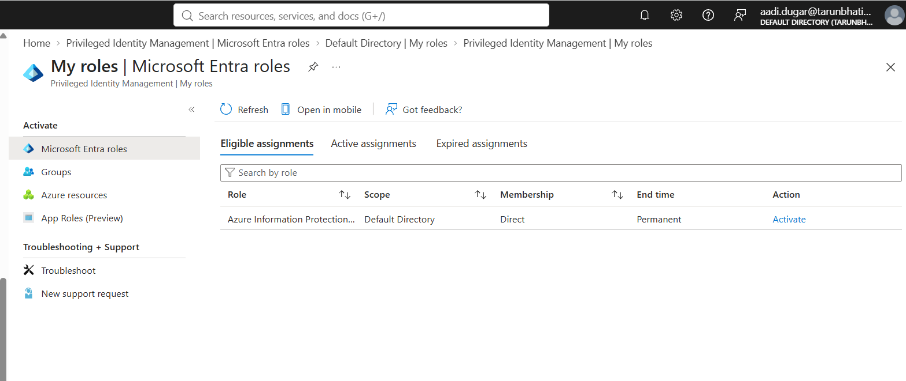
3.4 Out-of-Band Break-Glass Administrative Isolation
Emergency recovery capabilities are vital for operational resilience. To comply with ISO 27001 emergency access provisions without violating Zero-Trust principles, a dedicated emergency recovery account was provisioned with Global Administrator. This account is isolated from daily operations, enrolled in hardware security key authentication, and monitored with automated alerting on any authentication event.

4. Phase 2: Cloud Data Residency, Hierarchical Azure RBAC & KQL Audit
Under modern data protection frameworks, data sovereignty and least-privilege infrastructure access are paramount. If an infrastructure engineer possesses storage-level read permissions, they could bypass departmental encryption and access raw salary registers or healthcare plans directly from cloud disk storage.
4.1 Central India Data Sovereignty & Unified Resource Group
All cloud assets for Nexora Consulting were provisioned strictly within the Central India cloud region inside resource group rg-nexora-privacy-lab-dev-001. This centralized deployment satisfies domestic data residency preferences and guarantees that metadata and storage blobs remain within Indian jurisdictional boundaries.

rg-nexora-privacy-lab-dev-001.

stnexorafinance001, stnexorahrdev001) and Purview account (purview-nexora-gov-001).
4.2 Two-Tier Storage IAM & Container Isolation
To prevent storage administrators from viewing confidential files, I implemented a strict two-tier hierarchical RBAC architecture:
- Storage Account Level (Management Plane): Operational groups hold only
Readerpermissions. This permits viewing storage metrics and diagnostic logs without granting permissions to download or read storage blobs. - Container Level (Data Plane): Granular permissions are assigned at the container boundary. On container
finance-documents,SG-NEX-FinanceholdsStorage Blob Data Contributorfor business uploads.SG-NEX-Privacy-Operationsand Purview's System-Assigned Managed Identity are restricted toStorage Blob Data Reader. Crucially,SG-NEX-HRhas zero assignments on the Finance container, completely eliminating lateral data traversal.
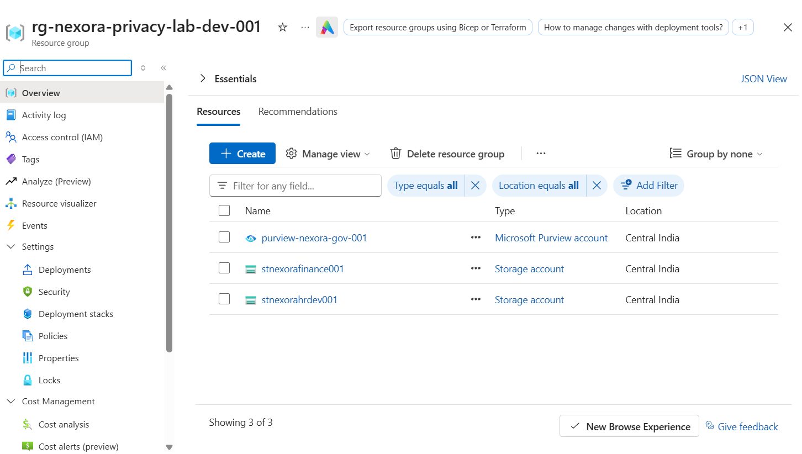
purview-nexora-gov-001 to prevent unauthorized policy tampering.

stnexorafinance001.

finance-documents.
4.3 KQL Resource Graph Audit: All 11 Verified Role Assignments
In enterprise compliance audits, manually clicking through multiple Azure portal blades is inefficient and prone to human oversight. To streamline and standardize least-privilege verification, I used an AI-assisted workflow to construct and validate a Kusto Query Language (KQL) audit query in Azure Resource Graph Explorer. In a single execution, it pulls every role assignment across Subscription, Resource Group, Storage Account, and Container levels into one normalized, auditable table.
authorizationresources
| where type == "microsoft.authorization/roleassignments"
| extend principalId = tostring(properties.principalId),
principalType = tostring(properties.principalType),
roleDefinitionId = tostring(properties.roleDefinitionId),
scope = tostring(properties.scope)
| join kind=leftouter (
authorizationresources
| where type == "microsoft.authorization/roledefinitions"
| extend roleDefinitionId = id,
roleName = tostring(properties.roleName)
) on roleDefinitionId
| project scope, principalId, principalType, roleName
| order by scope asc| Scope Level | Resolved Identity / Group | Assigned Azure RBAC Role | Zero-Trust Security & Legal Purpose |
|---|---|---|---|
| Subscription | Tarun Bhatia (Break-Glass Owner) | Owner | Subscription governance and emergency recovery only. |
| Resource Group | purview-nexora-gov-001 (MSI) | Storage Blob Data Reader | Keyless automated PII classification across all data lakes. |
| Resource Group | Tenant Administrator | Reader | Management plane visibility; zero data-plane access. |
| Storage (Finance) | SG-NEX-Finance | Reader | Storage account telemetry; cannot download blobs. |
| Storage (Finance) | SG-NEX-Privacy-Operations | Reader | Storage account telemetry; cannot download blobs. |
| Container (finance-docs) | SG-NEX-Privacy-Operations | Storage Blob Data Reader | Read-only compliance audit inspection; cannot modify. |
| Container (finance-docs) | SG-NEX-Finance | Storage Blob Data Contributor | Write/upload rights isolated strictly to Finance container. |
| Storage (HR) | SG-NEX-Privacy-Operations | Reader | HR account telemetry; cannot download blobs. |
| Storage (HR) | SG-NEX-HR | Reader | HR account telemetry; cannot download blobs. |
| Container (hr-docs) | SG-NEX-Privacy-Operations | Storage Blob Data Reader | Read-only compliance audit inspection on employee files. |
| Container (hr-docs) | SG-NEX-HR | Storage Blob Data Contributor | Write/upload rights isolated to HR; zero access to Finance. |
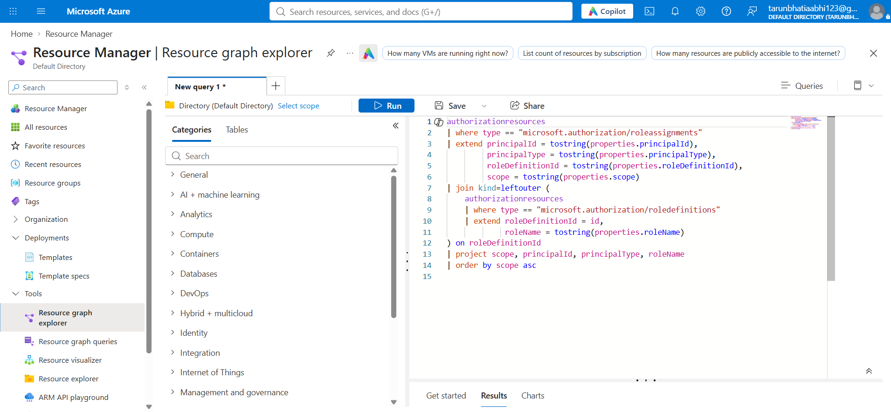
5. Phase 3: Automated Data Discovery & PII Classification in Azure Data Lake
Organizations cannot protect personal data they have not discovered. In high-growth enterprises, departments upload vendor spreadsheets, tax filings, and bank reconciliation statements daily. Static data inventories go stale within weeks.
5.1 Private Storage Lockdown & Production Datasets
Anonymous public access was permanently disabled on container finance-documents. I staged four realistic corporate datasets simulating Nexora's B2B operations: bank_reconciliation.csv, card_transactions_test_only.csv, invoice_register.csv, and vendor_master.csv.


5.2 Keyless Purview Managed Identity Registration
Hardcoded access keys and Shared Access Signatures (SAS) represent a top vector of cloud exfiltration. Instead, I registered the Azure Blob Storage account inside Microsoft Purview Data Map utilizing Purview's System-Assigned Managed Identity (MSI) authenticated directly via Azure RBAC.

5.3 Automated Column-Level PAN Auto-Classification
Upon executing automated scanning, Purview cataloged all four CSV assets into the Purview Unified Catalog. The classification engine automatically inspected column contents, identified pattern matches for India Permanent Account Number (PAN) inside the Beneficiary_PAN_TEST column of bank_reconciliation.csv, and applied statutory classification tags without manual human intervention.
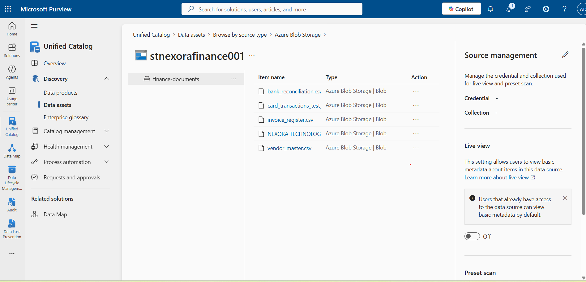

Beneficiary_PAN_TEST.
6. Phase 4: Cryptographic Sensitivity Labels, Custom Healthcare Regex & Live DLP Exfiltration Prevention
Classification without automated enforcement is incomplete. In this phase, I configured end-to-end preventative guardrails to ensure sensitive personal records cannot leave Nexora's operational boundary via email or cloud file sharing.
6.1 Priority 9 Cryptographic Sensitivity Labeling
I engineered a top-priority sensitivity label: Confidential - PII and Financial at Priority 9 (seated above Public, General, and Internal Confidential). This label enforces AES-256 encryption restricted strictly to authenticated Nexora employees and requires mandatory user justification for any attempt to downgrade.

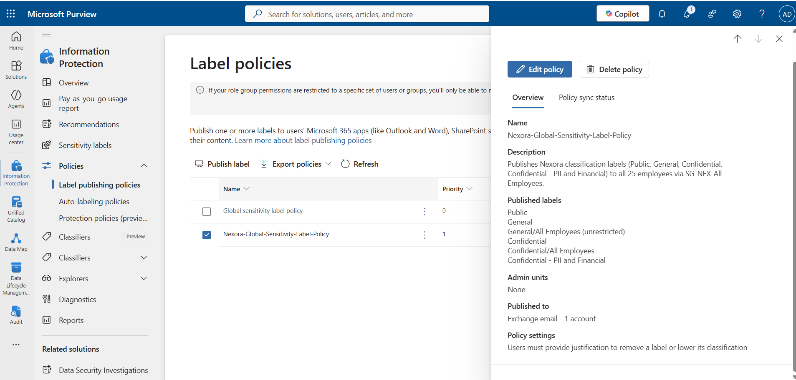
SG-NEX-All-Employees with audit logging.
6.2 Custom Healthcare & Patient ID Regex Classifier
A common limitation of built-in cloud compliance engines is that while they detect standard national IDs (like Indian PAN or credit cards), they completely fail to recognize structured domain-specific identifiers. For Nexora's healthcare advisory branch, client patient records use a structured alphanumeric format: NDIS-XXX-XXX-XXX.
To address this gap, I authored a custom Sensitive Information Type (SIT) utilizing regex pattern matching combined with semantic proximity keywords (such as Patient, Healthcare, Disability, Support Coordination) within 300 characters, achieving high-confidence detection for client healthcare identifiers.
Pattern: \bNDIS-\d{3}-\d{3}-\d{3}\b
Proximity: 300 characters
Keywords: Healthcare, Patient, Disability, Plan Manager, Support Coordination
Confidence: High (85%+)
6.3 Auto-Labeling Policy Simulation
Deploying encryption policies directly into production can break business workflows if false positives occur. I configured policy Nexora-AutoLabel-Confidential-PII in simulation mode across Exchange, SharePoint, and OneDrive, validating rule matches against staged datasets before non-disruptive production enforcement.

6.4 LIVE PROOF: Real-Time Outlook Exfiltration Interception
With policies synchronized across the tenant, I conducted a live data exfiltration test. A simulated internal analyst drafted an outbound email to an external personal Gmail address, attaching synthetic Indian PAN numbers (ZZZPX5001J), credit card numbers (4111111111111111), and structured patient identifiers (NDIS-430-881-922).
The moment the user clicked send, Microsoft Purview DLP intercepted the transmission at the Exchange transport pipeline. The message was blocked immediately, and Outlook generated an automated policy bounce notification: "Message Blocked: Confidential Q4 Client & Employee Payout Verification". Zero personal data reached the external recipient.

Nexora-PII-Financial-Leak-Prevention.


7. Phase 5: Generative AI & Microsoft Copilot Data Leak Prevention
Generative AI tools introduce an acute shadow-exfiltration risk. Under Section 6 of India's DPDP Act, personal data collected for business consulting cannot be ingested into large language models without explicit purpose consent. If employees paste raw client PAN numbers or patient medical notes into AI assistants for summarization, a statutory breach occurs instantly.
7.1 Dedicated Microsoft 365 Copilot DLP Architecture
To address this threat, I deployed policy Nexora-Copilot-PII-Protection configured specifically for Microsoft 365 Copilot, Copilot Chat, and Copilot Cowork. This policy enforces real-time inspection of all inbound prompt tokens and outbound model completions.
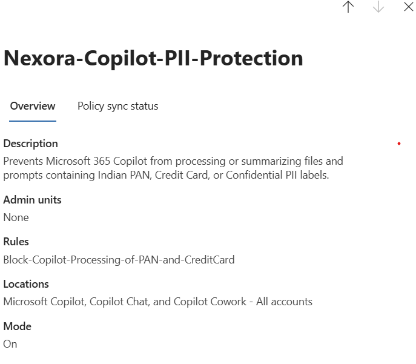
7.2 LIVE PROOF: Copilot Prompt Interception in Real-Time
To verify enforcement, I entered an operational prompt directly into Microsoft 365 Copilot Chat containing synthetic PAN, credit card, and patient identifiers. The Copilot DLP engine intercepted the payload instantly, halting processing and displaying an organizational security alert: "Your prompt contains sensitive information restricted by your organization's compliance policy."
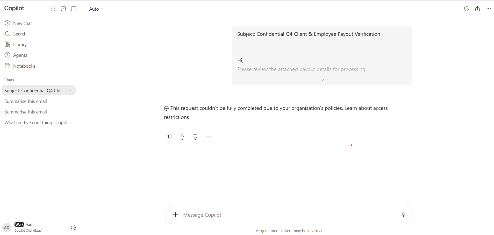
8. Phase 6: Statutory DSAR Fulfillment, Third-Party Redaction & Chain-of-Custody
Under Section 11 of India's DPDP Act 2023, Data Principals possess the statutory right to request a summary of their personal data processed by the organization. However, enterprise records frequently store multiple individuals' information in unified spreadsheets. Fulfilling an access request by carelessly exporting raw files would breach third-party privacy.
8.1 Multi-Tenant SharePoint Financial Repository
I configured private SharePoint team site Nexora-Finance-Portal hosting vendor master registers and banking reconciliation records subject to access requests.
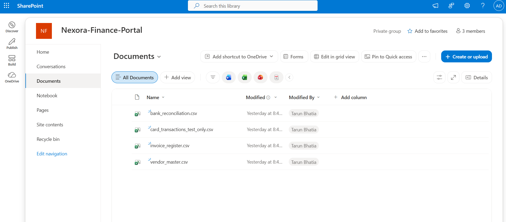
8.2 Targeted eDiscovery Premium Case Creation
To fulfill statutory request DSAR-2026-001, I established a formal legal case in Microsoft Purview eDiscovery (Premium). Utilizing KQL search syntax targeting Demo Vendor 0002 Group across SharePoint and Exchange, the search query isolated exactly 3 matching files (272,103 bytes) while excluding unrelated enterprise logs.

DSAR-2026-001-Vendor-and-Employee-Access-Request under DPDP Act Section 11.

8.3 Review Set Tagging & Third-Party PII Redaction
Upon ingesting the files into review set DSAR-2026-001-Review-Set, inspection revealed that vendor_master.csv contained PAN numbers belonging to unrelated external vendors. Releasing this file unedited would constitute a severe personal data breach. I applied a mandatory Requires-Redaction tag, routing the dataset for column-level stripping prior to external release.
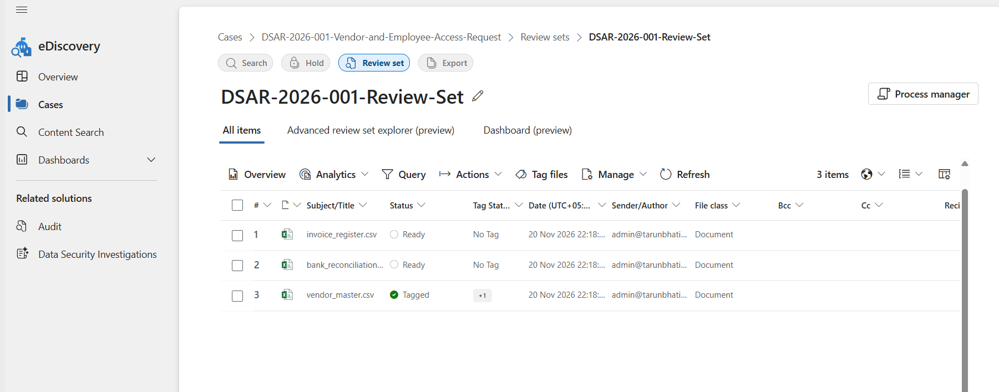
8.4 Sandboxed Reviewer RBAC & 4-File Chain-of-Custody Export
To preserve evidence integrity, I assigned Purview Role Group Reviewer (backed by SG-NEX-Legal-Compliance) strictly to this single case. Reviewers can inspect and tag records within case DSAR-2026-001, but are barred from global export privileges.
Finally, I exported the official 4-file Chain-of-Custody Audit Report (Summary.csv, Locations.csv, Settings.csv, and Statistics.csv) backed by Microsoft 365 Unified Audit Logging—providing unassailable forensic proof to regulators.
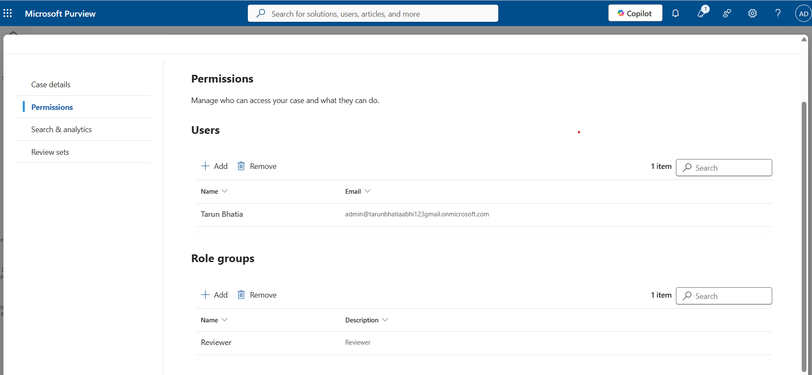
9. Real-World Cloud Engineering & Troubleshooting Lessons
Deploying enterprise data governance across a live cloud tenant invariably encounters undocumented edge cases and API validation roadblocks. Below are the three key technical hurdles resolved during this implementation:
Lesson 1: Tenant Hydration & Audit Engine Activation via PowerShell V3
In newly provisioned Microsoft 365 enterprise tenants, Microsoft maintains the Exchange and Purview compliance engine in a "dehydrated" (quiescent) state to conserve hyperscale compute resources. When attempting to activate Purview Auto-Labeling and unified audit logging via the graphical portal, the API consistently failed with InvalidOperationInDehydratedContextException and UnifiedAuditLogDisabledException.
Resolution: Utilizing an AI-assisted troubleshooting workflow, I identified and executed the necessary Exchange Online PowerShell V3 commands to force organization customization and explicitly enable unified audit logging:
# Install and import Exchange Online V3 module with AllowClobber
Install-Module -Name ExchangeOnlineManagement -Force -AllowClobber
Connect-ExchangeOnline -UserPrincipalName admin@tarunbhatia...
# Wake up tenant configuration from dehydrated state
Enable-OrganizationCustomization
# Verify hydration state across Indian regional endpoints
Get-OrganizationConfig | Select-Object IsDehydrated, Name
# Enable Microsoft 365 Unified Audit Log ingestion
Set-AdminAuditLogConfig -UnifiedAuditLogIngestionEnabled $trueLesson 2: Exchange DLP Validation API (`InvalidBlockAccessActionException`)
When configuring the outbound data exfiltration rule in Purview DLP, the Exchange transport pipeline rejected policy activation with InvalidBlockAccessActionException.
Resolution: Microsoft's underlying DLP API enforces an undocumented validation requirement: configuring "Block people outside your organization" requires that "User notifications & Policy tips" be toggled to On simultaneously. This design requirement ensures that users receive transparent contextual policy guidance at the exact point of risk rather than silent delivery drops.
Lesson 3: 3-Tier RBAC Separation of Duties
A common security antipattern is attempting to manage all permissions through Entra ID directory roles. Because directory roles carry global blast radiuses, I engineered a 3-tier separation architecture:
- Entra PIM: Used strictly for individual, time-bounded JIT directory elevation.
- Azure Storage IAM: Hierarchical data-plane control isolating Finance and HR containers.
- Purview Role Groups: Case-scoped delegation restricting legal analysts to single DSAR investigations without global tenant visibility.
10. Conclusion & Architecture Summary
The Nexora Consulting implementation validates that statutory compliance under India's DPDP Act 2023, ISO 27001, and PCI-DSS can be transformed from abstract legal liability into an automated, auditable cloud architecture.
By combining Entra PIM's Zero Standing Privileges, Azure's two-tier hierarchical storage RBAC (verified via KQL), Purview's keyless data discovery, real-time Outlook and Copilot DLP guardrails, and case-sandboxed eDiscovery DSAR redaction, the architecture establishes a complete defense-in-depth perimeter for enterprise data protection.
Connect with me at lawxtech.in or download my Full Resume (PDF).